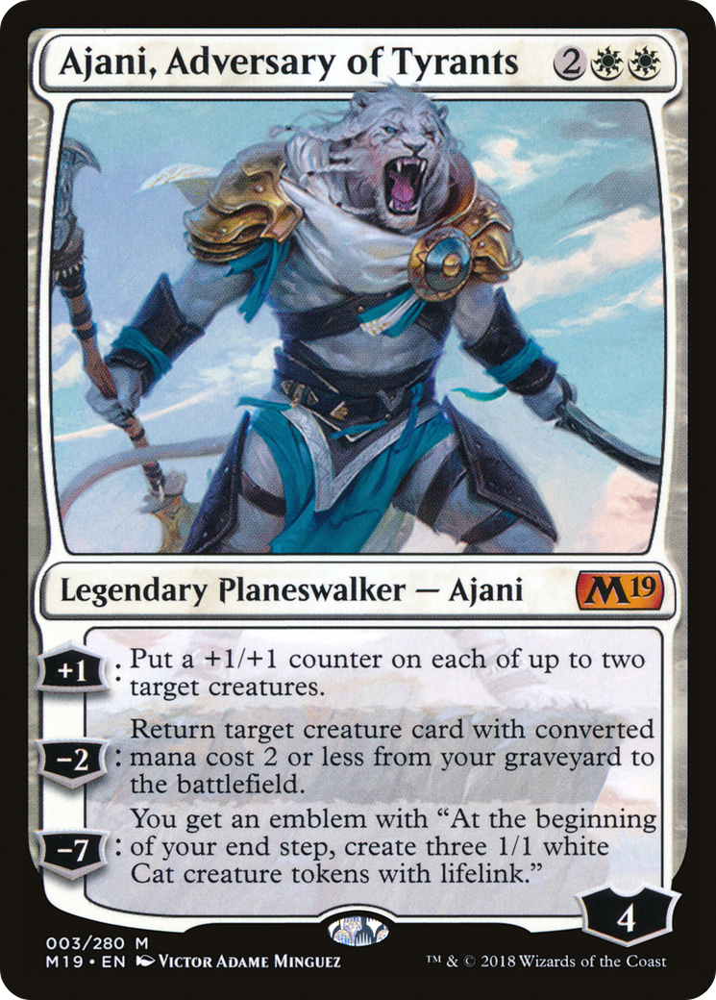

Magic cards compress a lot of information into a small space. Wizards of the Coast has been branching out with formatting lately, but the "typical" Magic card look is very standardized and easy to understand.
In the top left is the card's name. This name is unique; any two cards with the same name are functionally identical, and differ only in terms of aesthetics. (Sometimes a card's wording is updated to fix an error or improve clarity. In this case a later printing of the card could have different words on it from an earlier printing. This is pretty rare, and the updated wording is the one that's used for gameplay purposes when it happens, no matter which physical printing of the card you have in your deck.) A card's name is only used to refer to the card, and has no gameplay function itself. (For example, a card might say to destroy all creatures with a specific name.
In the top right is a card's mana cost. This is the amount of resources ("mana") you need to spend in order to play the card. Each symbol of a certain color represents 1 mana of that color, and each symbol with a number in it represents that much mana in any combination of colors.
Some effects refer to a card's "mana value". This means the total amount of mana in its mana cost, ignoring color. For example, Owlbear Shepherd has a mana value of 3. To cast it, you'd need to pay 1 green mana and 2 mana of any color.
Below the art is the type line. This tells you what kind of card it is. There are eight main card types: Artifacts, enchantments, creatures, planeswalkers, battles, instants, sorceries, and lands.
Instants and sorceries are "single use". When you play them, you do what they say and then put them into the discard pile, known as your "graveyard". The difference is that instants can be played at any time, whereas sorceries (and all other card types) can only be played on your turn.
The other 6 card types are "permanents", which means that when you play them they go onto the table in front of you (known as the "battlefield" and remain in play until something moves them somewhere else.
- Creatures are the most important card type, and the main way you win the game. You can use them to attack the opponent and reduce their life points. You'll learn how this works in the course on combat.
- Lands are the resources you use to cast spells. Each land produces 1 mana per turn, which can be spent to pay the mana cost of your cards.
- Planeswalkers and battles start with a "health" number and can be attacked. A planeswalker's health is known as its "loyalty", and a battle's health is known as its "defense". You can attack your opponent's planeswalkers, and you can attack your own battles. Planeswalkers have some abilities that can be used once per turn, and either add or remove loyalty from the planeswalker.
- Artifacts and enchantments don't have any inherent rules. Their only function is to provide you with whatever benefit is described in their text box.
The words to the right of the long dash are the card's "subtype". Most creatures have one or more subtypes, like how Owlbear Shepherd is a Goblin and a Druid. Subtypes don't have any default rules meaning, and exist just for flavor and for other cards to refer to them. (For example an effect might grant some bonus to all Goblins.)
As an exception, there are a few special subtypes that do have rules meaning. The most common of these are the basic land subtypes: Plains, Island, Swamp, Mountain, and Forest. These subtypes determine what color of mana that land produces.
There are also the "Aura" and "Equipment" subtypes, which mean that that card gets attached to a creature and grants it some bonus. Auras are cast directly on that creature and stay on it until it dies. Equipment start unattached and can be moved around between creatures using the Equipment's "equip" ability.
There are a few other subtypes with special rules, but they're rare and you can look them up as you come across them. (Learning new things is a big part of Magic; there are over 25,000 different cards, and you don't need to know how they all work in order to play with the ones you have.)
Last there's the supertype, which only some cards have. If a supertype exists, it's to the left of the card type. "Basic" is a supertype that means you can have any number of the card in your deck (4 is the limit for everything else), and "legendary" means that each player can only have one on the battlefield at any given time; any extras will die.
Below the type line is the text box, where a card's abilities are listed. Most of them are explained in plain English, but sometimes there are special terms and keywords. For example, "hexproof" means that that card can't be the target of other spells and abilities.
Lastly in the bottom right, there's some type-specific information. On a creature, this is its power and toughness, which determine how much damage it deals in combat and how much health it has. (Power and toughness are collectively referred to as a creature's "size".) Planeswalkers have their loyalty in the bottom right, and battles have their defense there. Other card types don't have anything in the bottom right at all.